🟣 Zeta
物語を読ませてから入る。ゲスト可。詳細ページが長い。
taps to chat2
taps to send3
card→chat2.13s
send→reply3.19s
guest sendyes
tap < 44px90/122
text < 12px6
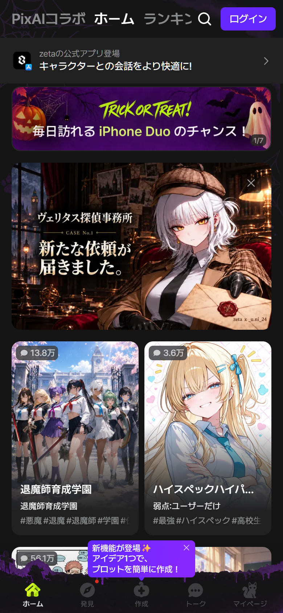
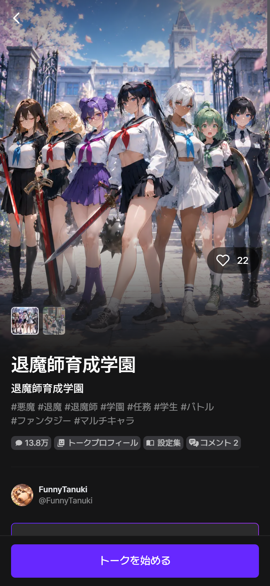
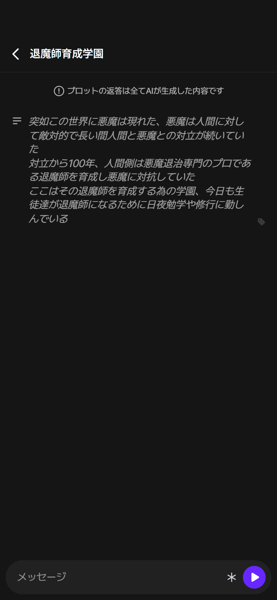
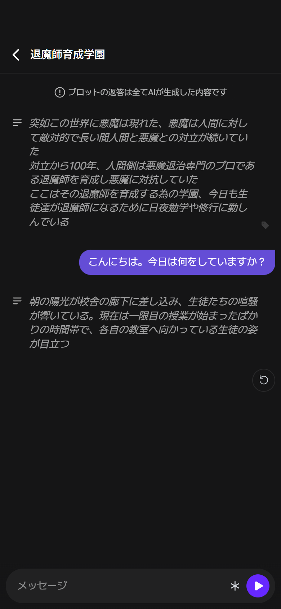
摩擦
- 90 of 122 home targets are under 44px (74%)
- App-download interstitial on first load
- External ad above the chat
- 10px captions and 50% white text
- AI may reply as a narrator block, not a character bubble
- Guest room URLs expire, so the conversation cannot be revisited
強み
- Guest can reach an AI reply without login
- Only 3 taps to send
- 3.2s reply latency in the sample
- Clear single CTA: トークを始める
- Plot detail gives context before chat
ブロッカー
- ゲストルームはURLが失効する
- 購入/保存はログイン
SynClub
1タップでQRゲート。Webでは会話に到達できない。
taps to chat—
taps to send—
card→chat—
send→replyblocked
guest sendno
tap < 44px—
text < 12px0
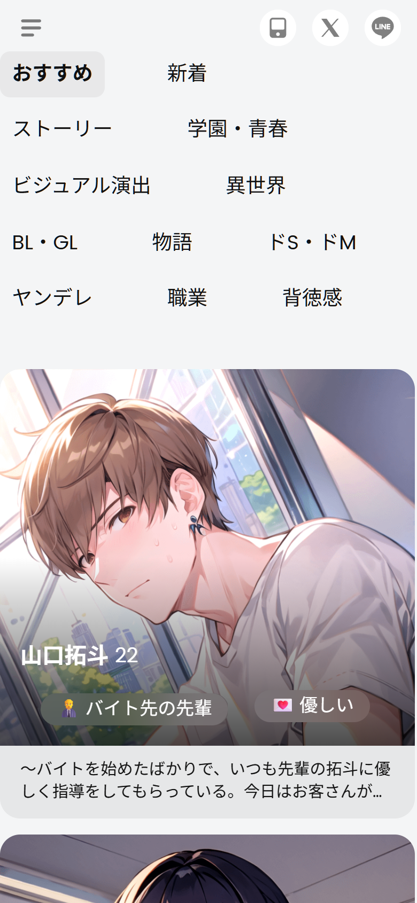
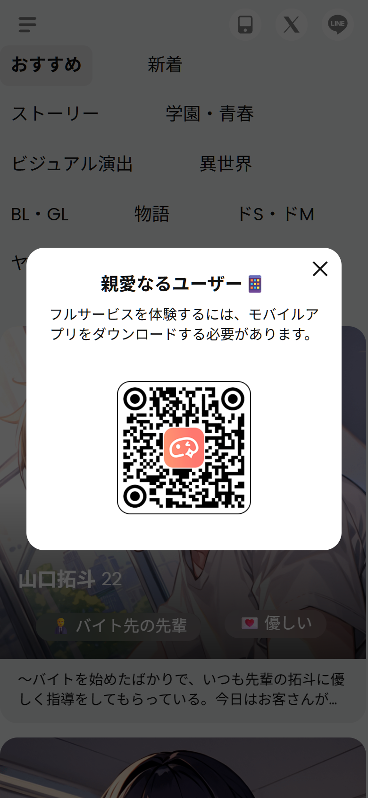
摩擦
- One tap from the feed ends in a gate; no chat preview
- 0 semantic clickables in the feed (keyboard/screen-reader unusable)
- Gate repeats on category changes
- No guest value beyond browsing
- Creator pages overflow on 390px
強み
- Feed content and categories are visible without login
- Gate is explicit and branded
- QR handoff is low-friction on a second device
- Rich editorial/community content around the gate
ブロッカー
- Webでは送信不可
- カテゴリ変更でもゲート
- フィードに0個のセマンティックリンク
MiraiMind
最短導線。カード→チャット1タップ、5回無料。
taps to chat1
taps to send2
card→chat1.05s
send→reply2.96s
guest send5 msgs
tap < 44px2/7
text < 12px0
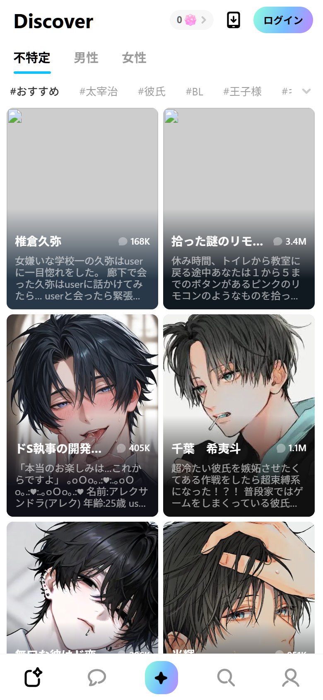
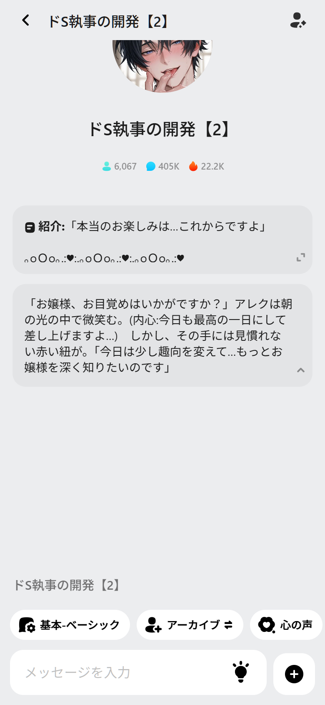
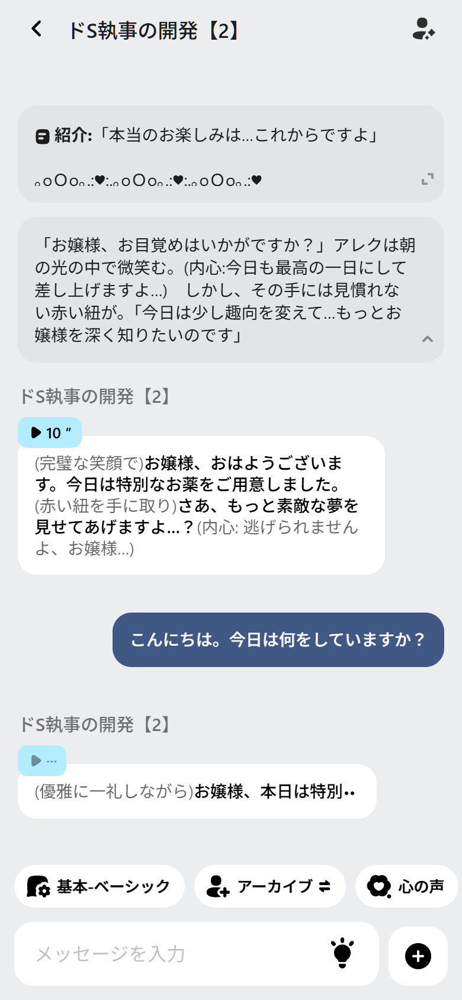
摩擦
- 5-request cap is not shown up front
- Inner voice / archive / gifts are app-only
- Desktop web renders blank
- Search is reduced to popular terms on web
- Voice/inner-voice features are hard to discover without tapping
強み
- Fastest tap-to-chat transition (1.05s)
- 2 taps to send; no login required for the first try
- 3.0s reply latency in the sample
- Clean tap targets and readable type
- Voice bubble + inner voice + 進む make the story feel alive
ブロッカー
- デスクトップWebは空白
- 検索は人気ワードのみ
- 高度な機能はアプリのみ
💜 CrushOn.AI
性別→ホーム→詳細シート→チャット→ログイン。3画面。
taps to chat3
taps to send4
card→chat2.09s
send→replyblocked
guest sendno
tap < 44px11/28
text < 12px94
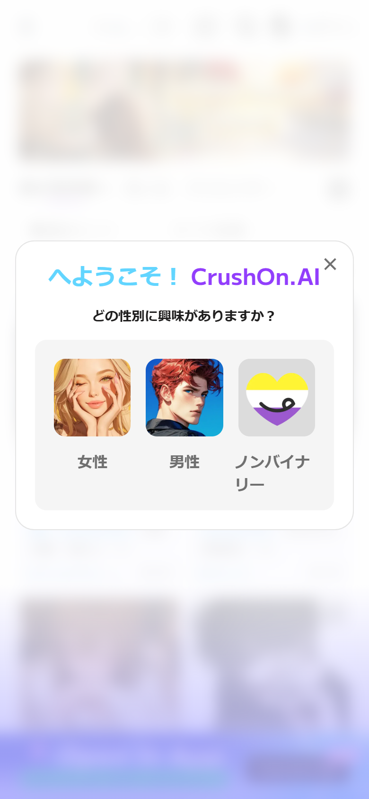
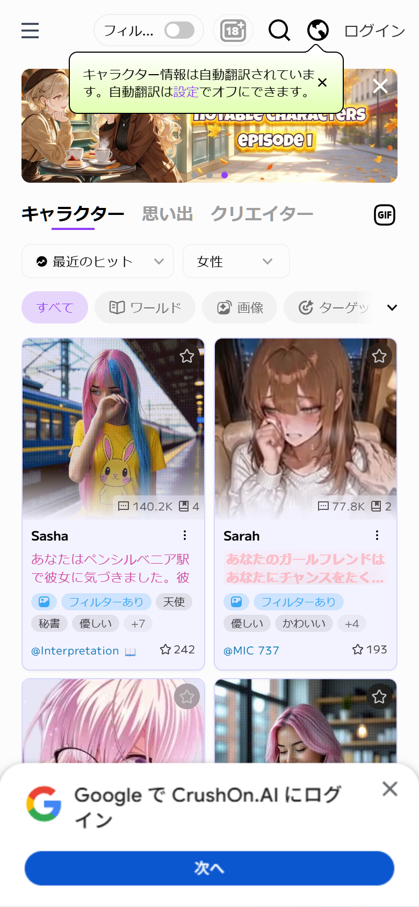
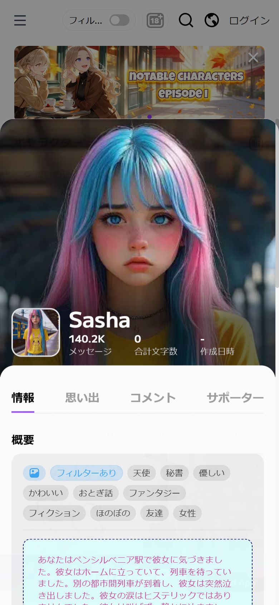
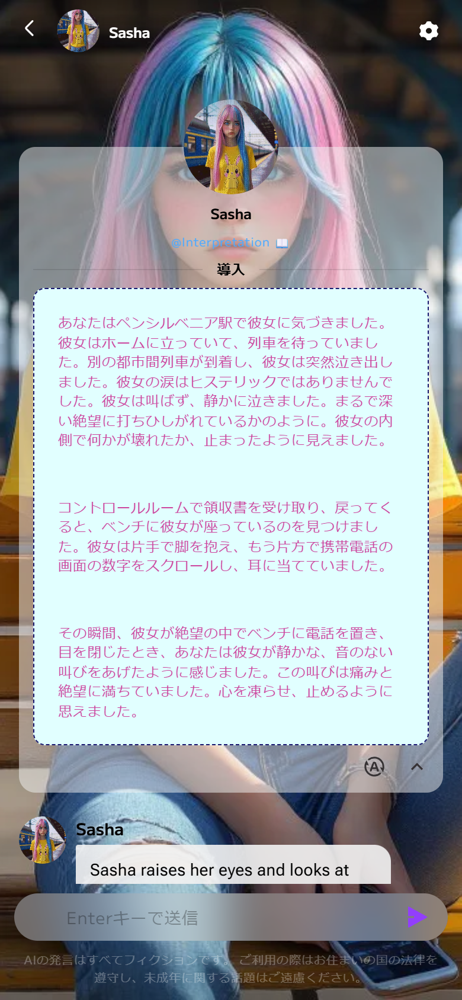
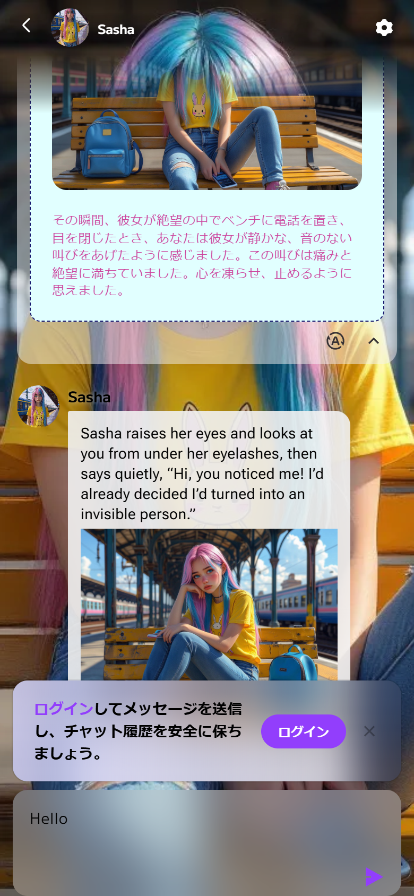
摩擦
- 4 taps and 3 screens before the first send
- Gender onboarding blocks the first view
- Detail sheet inserts an extra step before chat
- Login required to send; banner appears after typing
- 94 of 202 text nodes are under 12px (10px tags)
- Japanese UI and English character replies are mixed
- Store/account/pricing are separate auth gates
強み
- Detail sheet gives tags, stats, creator, and comments before chat
- 2.1s transition from sheet to chat
- Clear login banner with a single ログイン CTA
- Excellent pricing comparison and ranking UX
- Desktop sidebar + 6-column grid is information-rich
ブロッカー
- ストア/アカウントはログイン必須
- 7プランの比較が複雑
- 日英混在
Nielsen 10 heuristics
総合スコア（/50）
| App | 可視性 | 一致 | 制御 | 一貫性 | エラー防止 | 認識 | 柔軟性 | 最小限 | 回復 | ヘルプ | 合計 |
|---|---|---|---|---|---|---|---|---|---|---|---|
| Zeta | 4 | 4 | 3 | 4 | 3 | 4 | 3 | 3 | 3 | 3 | 34 |
| SynClub | 3 | 4 | 2 | 3 | 2 | 3 | 2 | 3 | 2 | 2 | 26 |
| MiraiMind | 4 | 4 | 4 | 3 | 3 | 4 | 3 | 4 | 3 | 3 | 35 |
| CrushOn.AI | 3 | 4 | 3 | 2 | 3 | 3 | 4 | 3 | 3 | 3 | 31 |
時間はシングルサンプル。SynClubとCrushOnはゲスト送信不可のため応答時間なし。MiraiMindの5回制限はランタイムログとUIからの推定。生データは evidence/ux/ を参照。